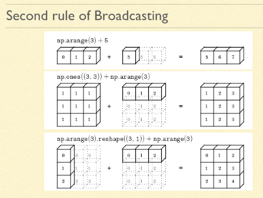

Numpy
Table of Contents
- Numpy faster than List
- Create
- Info
- Operation
- Load numpy from file
- input/output:
- Indexing and Slicing
- Boolean Index
- Reshape
- Stacking
- Missing Values
- Random
- BuildIn Function
- Custom Function
- Iteration (Loop)
- nditer
- Sort
- Append
- Concat
- Unique
- Where
- Histogram
- Correlation Co-efficient
- Plot
- TODO Mesh Grid
- Boardcasting
- Copy and View
[ Home ] \( \) | \( \) \( \) [text] \( \) \( \) | \( \) \( \) [link] \( \) \( \) | \( \) \( \) [title] \( \) \( \) | \( \) \( \) [icon] \( \) \( \) | \( \) \( \) [target] \( \) \( \) | \( \) \( \) [expanded] \( \) \( \)
Numpy faster than List
import numpy as np import time import sys SIZE = 1000000 l1 = range(SIZE) l2 = range(SIZE) a1=np.arange(SIZE) a2=np.arange(SIZE) # python list start = time.time() result = [(x+y) for x,y in zip(l1,l2)] print("python list took: ",(time.time()-start)*1000) # 226.3377 msec # numpy array start= time.time() result = a1 + a2 print("numpy took: ", (time.time()-start)*1000) # 11.5299 msec
python list took: 97.0754623413086 numpy took: 11.291265487670898
Create
a = np.array([[1,2,3],[4,5,6],[7,8,9]], dtype='int8') # >>> array([[1, 2, 3], # [4, 5, 6], # [7, 8, 9]], dtype=int8)
np.arange(1,15) # >>> array([ 1, 2, 3, 4, 5, 6, 7, 8, 9, 10, 11, 12, 13, 14]) np.ones((2,3)) # >>> array([[1., 1., 1.], # [1., 1., 1.]]) np.zeros((2,3)) # >>> array([[0., 0., 0.], # [0., 0., 0.]]) np.identity(3) # >>> array([[1., 0., 0.], # [0., 1., 0.], # [0., 0., 1.]]) np.linspace(0,5,num=10) # >>> array([0. , 0.55555556, 1.11111111, 1.66666667, 2.22222222, # 2.77777778, 3.33333333, 3.88888889, 4.44444444, 5. ]) np.full((2,2), 99) # >>> array([[99., 99.], # [99., 99.]], dtype=float32) # Any other number (full_like) np.full_like(a, 4) # >>> array([[4, 4, 4], # [4, 4, 4], # [4, 4, 4]], dtype=int8) np.arange(0,15).reshape(3,5) # >>> array([[ 0, 1, 2, 3, 4], # [ 5, 6, 7, 8, 9], # [10, 11, 12, 13, 14]])
array([[ 0, 1, 2, 3, 4],
[ 5, 6, 7, 8, 9],
[10, 11, 12, 13, 14]])
# Repeat an array arr = np.array([[1,2,3]]) r1 = np.repeat(arr,3, axis=0) print(r1)
[[1 2 3] [1 2 3] [1 2 3]]
a=np.arange(0,15) # >>> array([ 0, 1, 2, 3, 4, 5, 6, 7, 8, 9, 10, 11, 12, 13, 14]) b =a.reshape(3,5) # >>> array([[ 0, 1, 2, 3, 4], # [ 5, 6, 7, 8, 9], # [10, 11, 12, 13, 14]]) # resize() function is used to create a new array of different sizes and dimensions. # resize() can create an array of larger size than the original array. # To convert the original array into a bigger array, resize() will add more elements (than available in the original array) by copying the existing elements (repeated as many times as required) to fill the desired larger size.
array([[ 0, 1, 2, 3, 4],
[ 5, 6, 7, 8, 9],
[10, 11, 12, 13, 14]])
Datatype:
Numpy support different DataTypes like int8, uint8, int16,
uint16, int32, int64, float32, float64, np.uint8,…..etc
for more details:
https://numpy.org/doc/stable/user/basics.types.html
a = np.array([[1,2,3],[4,5,6],[7,8,9]], dtype='int32') # Change data Type a.astype(int) # change to type int
Info
a = np.array([[1,2,3],[4,5,6],[7,8,9]], dtype='int8') # array([[1, 2, 3], # [4, 5, 6], # [7, 8, 9]], dtype=int8)
a = np.array([[1,2,3],[4,5,6],[7,8,9]], dtype='int8') type(a) # numpy.ndarray a.ndim # 2 Dimension : row X col a.dtype # Data type : int8 a.size # 9 a.shape # No.row X No.col : 3 X 3 a.itemsize # Size of each element in byte(8 bits) a.nbytes # Total size of np array : 9 bytes a.max() # max element value : 9 np.max(a) # same as above a.argmax() # max element series_index : 8 a.min() # min element value: 1 # same as above a.argmin() # min element series_index: 1 a.sum() # sum of all element: 45 a.prod() # product of all element: 362880 a.astype('float') # change the dataType to float # It is used in ML example if you have age in float then we will convert into int8 # which reduces memory and increces to speed
362880
# import # a = np.random.randint(1,10, size=(3,4)) a= np.array([[3, 3, 5, 2], [6, 2, 6, 5], [9, 7, 1, 2]]) np.min(a, axis=0) # >>> array([3, 2, 1, 2]) np.min(a, axis=1) # >>> array([2, 2, 1]) # a
array([2, 2, 1])
Operation
Numpy Array Operation Can be broadly classified into 3 types
- Scalar Operation
- Condition Operation
- Vector Operation
Scalar Operation
a = np.array([1,2,5,7,8,3],dtype ='int8') # a + 2 # [ 3, 4, 7, 9, 10, 5] # a -2 # [-1, 0, 3, 5, 6, 1], # a *2 # [ 2, 4, 10, 14, 16, 6] # a **2 # [ 1, 4, 25, 49, 64, 9], # a/2 # [0.5, 1. , 2.5, 3.5, 4. , 1.5] # a//2 # [0, 1, 2, 3, 4, 1] # a%2 # [1, 0, 1, 1, 0, 1],
Condtional Operations
a = np.array([1,2,5,7,8,3],dtype ='uint8') a > 5 # >>> array([False, False, False, True, True, False]) a >= 5 # >>> array([False, False, True, True, True, False]) a < 5 # >>> array([ True, True, False, False, False, True]) a <=5 # >>> array([ True, True, True, False, False, True]) a ==5 # >>> array([False, False, True, False, False, False]) a !=5 # >>> array([ True, True, False, True, True, True]) ~(a==5) # >>> array([ True, True, False, True, True, True]) # ~ : is not operator
array([ True, True, False, True, True, True])
Vector Operator
a= np.arange(0,6).reshape(2,3) # array([[0, 1, 2], # [3, 4, 5]]) b= np.arange(6,12).reshape(2,3) # array([[6, 7, 8], # [9, 10, 11]])
b + a # array([[ 6, 8, 10], # [12, 14, 16]]) b - a # array([[6, 6, 6], # [6, 6, 6]]) a * b # array([[ 0, 7, 16], # [27, 40, 55]]) a / b # array([[0. , 0.14285714, 0.25 ], # [0.33333333, 0.4 , 0.45454545]]) b ** a # array([[ 1, 7, 64], # [ 729, 10000, 161051]]) a % b # array([[0, 1, 2], # [3, 4, 5]])
array([[0, 1, 2],
[3, 4, 5]])
LinearAlgebra (Matrix
Operation)
https://numpy.org/doc/stable/reference/routines.linalg.html
x = [1, 2, 3] y = [4, 5, 6]
array([-3, 6, -3])
# Vector Product: np.dot(x,y) #>>> 32 # # Vector Cross Product np.cross(x,y) #>>> array([-3, 6, -3]) a = np.array([[1, 0], [0, 1]]) b = np.array([[4, 1], [2, 2]]) # # Matrix Multiplication np.matmul(a, b) # array([[4, 1], # [2, 2]]) # # Matrix power np.linalg.matrix_power(b, 3) # Matrix A rise to power n # array([[84, 30], # [60, 24]]) # # Inverse Matrix np.linalg.inv(b) # # array([[ 0.33333333, -0.16666667], # [-0.33333333, 0.66666667]]) # # Visit the site for more details like Eigen Value, Eigen Vector, UD Decomposison, np.linalg.matrix_rank(b) # Return matrix rank of array using SVD method # >> 2 np.trace(b) # Return the sum along diagonals of the array. # >>> 6 np.linalg.solve(a, b) # Solve a linear matrix equation, or system of linear scalar equations. # >>> array([[4., 1.], # [2., 2.]]) np.linalg.det(b) # Compute the determinant of an array. # >>> 6.0 np.transpose(b) # Transpose Matrix b.T # Transpose Matrix # array([[4, 2], # [1, 2]])
array([[4, 2],
[1, 2]])
Load numpy from file
There are two ways (constructs) in NumPy to load data from a text
file:
(1) using loadtxt() function
(2) using genfromtxt() function
filedata = np.genfromtxt('data.txt', delimiter=',') filedata = filedata.astype('int32') print(filedata)
[[0.82596839 0.95833501 0.17192437 0.78371888 0.53945031] [0.9723533 0.59918521 0.1236615 0.66834103 0.40173496] [0.54851693 0.48833575 0.56565191 0.49291561 0.93611409] [0.36303892 0.99167391 0.47755838 0.47440971 0.36824659] [0.51440319 0.13839975 0.24978329 0.4493709 0.91917307] [0.68906406 0.28156694 0.91395489 0.191582 0.97669197] [0.51914243 0.73206077 0.45293007 0.21657347 0.71859144] [0.01915101 0.97520877 0.03131179 0.11126382 0.85022564]]
input/output:
LoadText file in numpy:
dtype_dict ={'names': ('longitude','latitude','housing_median_age','total_rooms','total_bedrooms',
'population','households','median_income','median_house_value','ocean_proximity'),
'formats': ('f8', 'f8', 'f8', 'f8', 'f8', 'f8', 'f8', 'f8', 'f8', '|S15')}
np.loadtxt(file, dtype=dtype_dict, delimiter=',', skiprows=1, unpack=True)
first parameter - file. It is the name of the file from which the
data is to be loaded.
second parameter - data type dtype of columns of the loaded csv file
housing_short.csv. It is a Python dictionary with key as names of the
columns, and values as the data types of these respective columns
e.g. f8, |S15, etc.
- ‘=f8=' means 64-bit floating-point number
- ‘=|S15=' -means a string of length of 15 characters
third parameter - delimiter. It is the character by which values in a
row of our csv file are separated.
For example, in our case values of a row of our csv file -
housing_short.csv - are separated by ‘,' (comma)
fourth parameter - skiprows. You can specify here, how many initial
rows of the csv file you want to skip loading.
E.g. you may want to skip the first row of this csv file, as it may
contain header information in the first row, which you may not want to
load.
fifth parameter - unpack. When unpack is True, the returned array is
transposed, so that arguments may be unpacked using
x, y, z = loadtxt(…) . When used with a structured data-type, arrays
are returned for each field. The default value for unpack is False. But
here we are returning the individual arrays so we have kept it here
asTrue.
Difference between resize() and reshape() :
reshape() will create an array with the same number of elements as the original array, i.e. of the same ‘size' as that of the original array. If you want to convert the original array to a bigger array, reshape() can't add more elements(than available in the original array) to give you a bigger array. Hence, reshape() is used to create a new array of the same size (as the original array) but of different desired dimensions.
resize() can create an array of larger size than the original array. To convert the original array into a bigger array, resize() will add more elements (than available in the original array) by copying the existing elements (repeated as many times as required) to fill the desired larger size. resize() is used to create a new array of different sizes and dimensions.
Indexing and Slicing

Array element of
ith row, jth col element = A[i,j] 2nd row = A[1,:] 3rd col = A[:,2]
Slicing
a = np.arange(0,10) # [0,1,2,3,4,5,6,7,8,9] a[2:5] # [2,3,4] a[2:5:2] # [2,4] a[0:10:2] # [0,2,4,6,8] a[::2] # even index value [0,2,4,6,8] a = [[1,2,3,4,5],[6,7,8,9,10]] # a[::2,::2] # even index in 2D array
# Fancy Index a= np.arange(24).reshape(6,4) # [[ 0 1 2 3] # [ 4 5 6 7] # [ 8 9 10 11] # [12 13 14 15] # [16 17 18 19] # [20 21 22 23]] a[[0,2,4]] # get 0th, 2nd, 4th rows # array([[ 0, 1, 2, 3], # [ 8, 9, 10, 11], # [16, 17, 18, 19]])
[[ 0 1 2 3] [ 4 5 6 7] [ 8 9 10 11] [12 13 14 15] [16 17 18 19] [20 21 22 23]]
Boolean Index
A = np.arange(0,25).reshape(5,5) # array([[ 0, 1, 2, 3, 4], # [ 5, 6, 7, 8, 9], # [10, 11, 12, 13, 14], # [15, 16, 17, 18, 19], # [20, 21, 22, 23, 24]]) # Boolean Matrix A> 20 # array([[False, False, False, False, False], # [False, False, False, False, False], # [False, False, False, False, False], # [False, False, False, False, False], # [False, True, True, True, True]]) # Boolean Index A[A>20] # array([21, 22, 23, 24]) A [ (A >10) & (A<20) ] # array([11, 12, 13, 14, 15, 16, 17, 18, 19]) A [~(A%2 ==0)] # array([ 1, 3, 5, 7, 9, 11, 13, 15, 17, 19, 21, 23])
array([ 1, 3, 5, 7, 9, 11, 13, 15, 17, 19, 21, 23])
Reshape
A = np.arange(1,10) B =A.reshape(3,3) # [[1,2,3][4,5,6],[7,8,9]] # array([[1, 2, 3], # [4, 5, 6], # [7, 8, 9]]) # Transpose a Matrix : np.transpose(B) B.T # array([[1, 4, 7], # [2, 5, 8], # [3, 6, 9]]) # ravel: Convert [n X m] matrix to [1 X nm] array A.ravel() # array([1, 2, 3, 4, 5, 6, 7, 8, 9]) # Split B = np.array([[1,2,3,4],[5,6,7,8]] ) np.hsplit(B,2) # [array([[1, 2], # [5, 6]]), # array([[3, 4], # [7, 8]])] np.hsplit(B,4) # [array([[1], # [5]]), # array([[2], # [6]]), # array([[3], # [7]]), # array([[4], # [8]])] np.vsplit(B,2) # [array([[1, 2, 3, 4]]), array([[5, 6, 7, 8]])]
[array([[1, 2, 3, 4]]), array([[5, 6, 7, 8]])]
Stacking
A = np.array([[0,1],[2,7]]) B = np.array([[4,5],[6,7]]) np.hstack((A,B)) # array([[0, 1, 4, 5], # [2, 7, 6, 7]]) np.vstack((A,B)) # array([[0, 1], # [2, 7], # [4, 5], # [6, 7]])
array([[0, 1],
[2, 7],
[4, 5],
[6, 7]])
Missing Values
s =np.array([1,2,np.nan,6]) np.isnan(s) # [False, False, True, False] s[ ~ np.isnan(s)] # [1,2,6]
array([1., 2., 6.])
Random
np.random.seed(47) np.random.random(size=10) # array([0.11348847, 0.97448309, 0.72873463, 0.35146781, 0.70760514, # 0.7996046 , 0.64556185, 0.41459961, 0.70603101, 0.24664938]) np.random.uniform(low=3,high=7,size=10) # 10 values between 3,7 # array([4.02396973, 3.09604542, 3.39490382, 4.20174574, 5.56342271, # 4.28883179, 3.74197655, 6.6687742 , 4.08368321, 4.09419157]) np.random.rand() # random value between 0,1 # 0.9544126823985427 # TODO: # np.random.permutation() # Random Integer values np.random.randint(-4,8, size=(3,3)) # array([[ 5, 5, 2], # [ 2, -3, 7], # [ 1, -1, 7]])
array([[ 5, 5, 2],
[ 2, -3, 7],
[ 1, -1, 7]])
BuildIn Function
# import a = np.random.randint(1,10, size=(3,4)) # >>> a= array([[3, 3, 5, 2], # [6, 2, 6, 5], # [9, 7, 1, 2]]) np.min(a, axis=0) # >>> array([3, 2, 1, 2]) np.min(a, axis=1) # >>> array([2, 2, 1]) # here # axis=0 means: function perform col-vise operatoin and result is a row-matrix # axis=1 means: function perform row-vise operatoin and result is a col-matrix
# np.min(a) np.max(a) np.sum(a) np.cumsum(a) np.cumproduct(a) np.sqrt(a) # Statistic np.mean(a) np.median(a) np.std (a) np.var (a) np.min (a) np.max (a) # Trigonomatric Function np.sin(a) np.cos(a) np.tan(a) np.exp(a) np.round(a) np.floar(a) np.ceil(a)
Custom Function
def sigmod(x): return 1/ (1+np.exp(x))
Iteration (Loop)
a = np.array([[0,1,2,3],[4,5,6,7]]) for row in a : print(row) for matrix2D in a3 : print(matrix2D) for element in np.nditer(a): print(element) for row in a: for cell in row: print(cell) for cell in a.flatten(): print(cell)
nditer
C style ordering
- TODO: Fortran order add image and practice
- TODO: C order add image and practice
a = np.arange(12).reshape(3,4) print(a) for x in np.nditer(a, order='C'): # iterate row-view print(x)
[[ 0 1 2 3] [ 4 5 6 7] [ 8 9 10 11]] 0 1 2 3 4 5 6 7 8 9 10 11
print(a) for x in np.nditer(a, order='F'): # iterate col-vise print(x)
[[ 0 1 2 3] [ 4 5 6 7] [ 8 9 10 11]] 0 4 8 1 5 9 2 6 10 3 7 11
External loop
print(a) print('# '*10) for x in np.nditer(a, flags=['external_loop'],order='F'): print(x)
[[ 0 1 2 3] [ 4 5 6 7] [ 8 9 10 11]] # # # # # # # # # # [0 4 8] [1 5 9] [ 2 6 10] [ 3 7 11]
Modify array values while
a = np.arange(12).reshape(3,4) print(a) for x in np.nditer(a, op_flags=['readwrite']): x[...] = x * x print(a)
[[ 0 1 2 3] [ 4 5 6 7] [ 8 9 10 11]] [[ 0 1 4 9] [ 16 25 36 49] [ 64 81 100 121]]
a
array([[ 0, 1, 4, 9],
[ 16, 25, 36, 49],
[ 64, 81, 100, 121]])
a = np.arange(12).reshape(3,4) # array([[ 0, 1, 2, 3], # [ 4, 5, 6, 7], # [ 8, 9, 10, 11]])
Sort
#a = np.random.random(9).reshape(3,3) a = np.array([[0.75405387, 0.77445802, 0.87904851], [0.48148232, 0.30290073, 0.44292787], [0.52813285, 0.60814462, 0.52524497]]) # increasing sort in row wise np.sort(a) # array([[0.75405387, 0.77445802, 0.87904851], # [0.30290073, 0.44292787, 0.48148232], # [0.52524497, 0.52813285, 0.60814462]]) np.sort(a, axis=0) # col are sorted # array([[0.48148232, 0.30290073, 0.44292787], # [0.52813285, 0.60814462, 0.52524497], # [0.75405387, 0.77445802, 0.87904851]])
array([[0.48148232, 0.30290073, 0.44292787],
[0.52813285, 0.60814462, 0.52524497],
[0.75405387, 0.77445802, 0.87904851]])
Append
np.append(a, row_new, axis=0) np.append(a, col_new, axis=1)
Concat
np.concat(c,d) # new row is added np.concat(c,d, axis=1) # new col is added
Unique
np.unique(a)
array([0.30290073, 0.44292787, 0.48148232, 0.52524497, 0.52813285,
0.60814462, 0.75405387, 0.77445802, 0.87904851])
Where
np.where(a>50,0,a) if a_elem > a then it is same value else a_elem = 0
if a_ele > 50 then a = a
if a_ele !> 50 then a =0
print(a) # [[0.75405387 0.77445802 0.87904851] # [0.48148232 0.30290073 0.44292787] # [0.52813285 0.60814462 0.52524497]] np.where(a< 0.5,0,a) # array([[0.75405387, 0.77445802, 0.87904851], # [0. , 0. , 0. ], # [0.52813285, 0.60814462, 0.52524497]])
[[0.75405387 0.77445802 0.87904851] [0.48148232 0.30290073 0.44292787] [0.52813285 0.60814462 0.52524497]]
Histogram
np.histogram(a,bin=[10,20,30,.....100]) np.histogram(a,bin=[10,20,50,100])
Correlation Co-efficient
np.corrcoef([20,40,25,36,60],[1,3,4,2,7]) # array([[1. , 0.8136049], # [0.8136049, 1. ]])
array([[1. , 0.8136049],
[0.8136049, 1. ]])
Plot
x = np.linspace(10,10,10) y= np.sin(x) import matplotlib.pyplot as plt %matplotlib inline plt.plot(x,y)
--------------------------------------------------------------------------- ModuleNotFoundError Traceback (most recent call last) Cell In[102], line 4 1 x = np.linspace(10,10,10) 2 y= np.sin(x) ----> 4 import matplotlib.pyplot as plt 5 plt.plot(x,y) ModuleNotFoundError: No module named 'matplotlib'
TODO Mesh Grid
Boardcasting

Copy and View
a_backup = a.copy() a_ref = a.view() # it is refer any change in a_ref will change in a
Learn More from
freecodeCamp: Python NumPy Tutorial for Beginners
https://www.youtube.com/watch?v=QUT1VHiLmmI&t=1808s
Learn more about numpy with